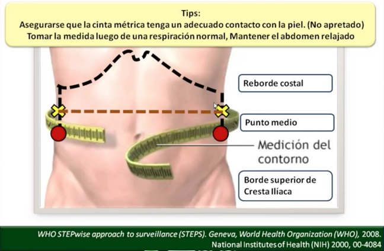

Metabolic Syndrome
WtHR.
Height was measured to the nearest 0.1 cm using a stadiometer. Waist and hip circumferences were measured using a flexible steel tape. The plane of the tape was perpendicular to the long axis of the body and parallel to the floor. WC was measured half way between the lower costal border and the iliac crest. The measurement was made at the end of a normal expiration while the subject stood upright, with feet together and arms hanging freely at the sides. Hip circumference was measured over non- restrictive underwear, or light-weight shorts, at the level of the maximum extension of the buttocks posteriorly in a horizontal plane, without compressing the skin.
Return Test
Síndrome Metabólico
Índice Cintura-Talla (ICT)
Calculado por el cociente entre la circunferencia de la cintura y la talla en centímetros. La talla se midió con una precisión de 0,1 cm utilizando un estadiómetro. La circunferencia de la cintura se midió utilizando una cinta de acero flexible. El plano de medida fue perpendicular al eje longitudinal del cuerpo y paralelo al suelo. Se midió a mitad de camino entre el reborde costal inferior y la cresta ilíaca. La medición se realizó al final de una espiración normal, mientras que el sujeto estaba en pie, con los pies juntos y los brazos colgando libremente a los lados. Circunferencia de la cadera se midió en ropa interior, en un plano horizontal, sin comprimir la piel.
¿ Cómo medir la circunferencia de la cintura ?
Material necesario
- Una cinta métrica para la antropometría (inextensible).
- Papel y bolígrafo.
Preparación de la persona.
Esta medición se tendría que tomar sin ropa, es decir, directamente sobre la piel. Si no fuera posible, se puede medir la circunferencia de la cintura por encima de un tejido fino, pero nunca sobre ropa gruesa o voluminosa.
Posición correcta para la medición:
- Al final de una espiración normal.
- Brazos relajados en posición natural.
- Localizar las siguientes referencias anatómicas: el borde inferior de la última costilla y la cresta ilíaca.
- Pasar la cinta métrica por el punto medio del segmento formado entre las dos referencias anatómicas.
Procedimiento de medición:
- Realice la medición con una precisión de 0,1 cm.
- Lleve a cabo, al menos, dos mediciones y anótelas en un papel.
- Determina la media de las mediciones efectuadas.

Volver al Test